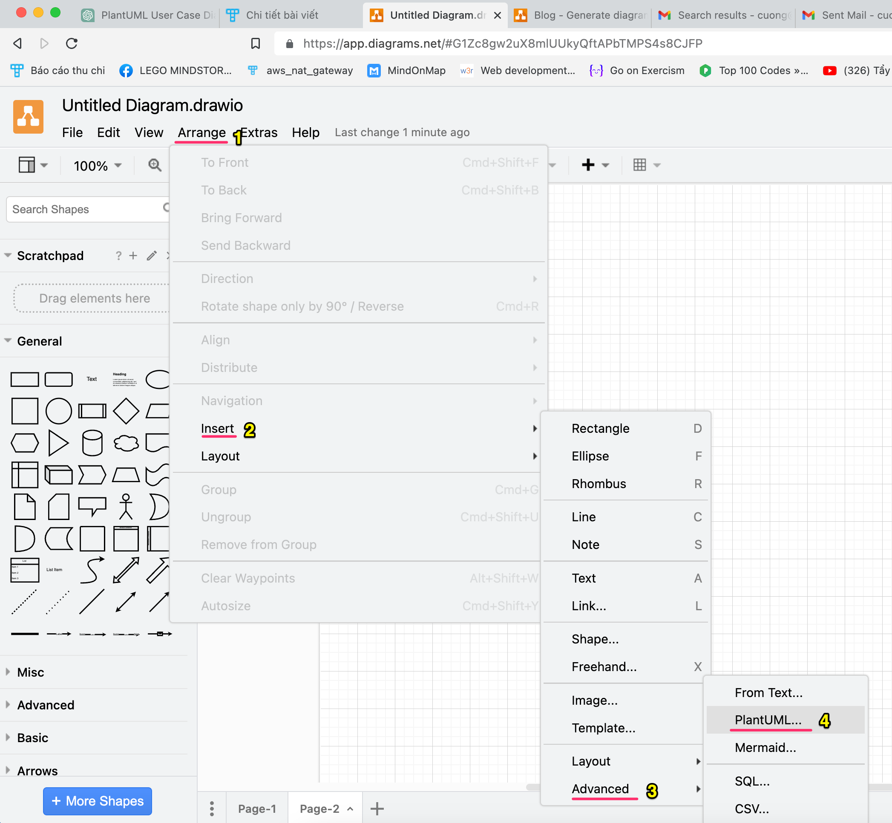
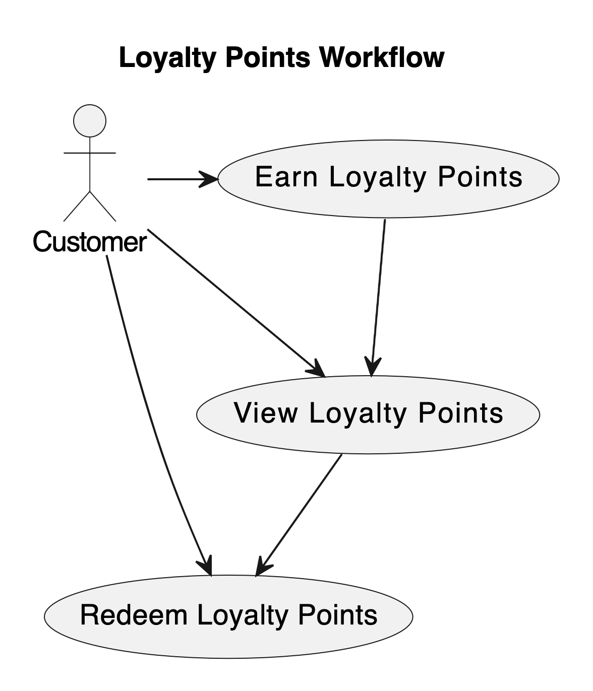

13 tháng 02, 2023 - 709 lượt xem
Bạn Ngô Hoàng Hùng là sinh viên lớp Java Spring Boot đang làm đồ án web site quản lý nhà hàng bia và đồ án. Bố mẹ bạn ý đang sở hữu một nhà hàng bia ở Hải Phòng.
Đồ án tại Techmaster sẽ có yêu cầu sinh viên phải tiến hành khâu lấy yêu cầu, tóm tắt nghiệp vụ và thiết kế UML. Trong đồ án tốt nghiệp của Hùng có một chức năng tích điểm thưởng (loyalty point) mỗi khi khách hàng mua hàng.
“Can you generate UML user case of loyalty points workflow in restaurant. In loyalty workflow, customer make order, his loyal point is accumulated. When loyalty point is over such a level, in the next order, customer will be discounted or give a gift such as free beer or snack.”
Sure, here’s a sample UML Use Case Diagram for a loyalty points workflow:
In this diagram, the actor “Customer” interacts with three use cases: “Earn Loyalty Points,” “View Loyalty Points,” and “Redeem Loyalty Points.” The customer can earn loyalty points through purchases or other actions, view their current loyalty points balance, and redeem their points for rewards or discounts. The arrows show the relationships between the use cases, indicating the flow of the customer’s interactions with the loyalty points system.
Chọn Menu: Arrange > Insert > Advanced > PlantUML…
Kết quả
Thực tế là ChatGPT đã giúp Hùng làm được rất nhiều phần trong đồ án. Tuy nhiên công việc của Hùng trong đồ án này là:
Tóm lại Hùng có thể coi ChatGPT như một người thầy, một người bạn code có kinh nghiệm hơn, đặc biệt họ có thể trả lời Hùng bất kỳ lúc nào Hùng có câu hỏi.
Thực tế các đoạn câu hỏi cho ChatGPT trong bài này là do một lập trình viên có 28 năm kinh nghiệm, tiếng Anh IELTS 7 viết. Rõ ràng có chiều sâu kinh nghiệm thì sẽ đặt được câu hỏi rõ ý đủ để ChatGPT trả về kết quả tốt nhất.
Có thực sự cần 28 năm kinh nghiệm hay IELTS 7 để ra lệnh cho ChatGPT không? Không ! Chỉ cần bạn có đọc viết được tiếng Anh tốt, đúng ngữ pháp có một lượng từ vựng chuyên ngành phần CNTT khoảng 120 từ và học lập trình bài bản khoảng 7 tháng là bạn có thể làm việc với ChatGPT rồi. Nhưng ngược lại, nếu bạn hoàn toàn chưa biết gì về lập trình, bạn hãy thử ra lệnh cho ChatGPT xem sao, có gì chia sẻ lại để tôi cập nhật.
Việc đặt câu hỏi tốt cho ChatGPT cũng như chọn keyword đúng cho Google thôi. Thực ra là khó hơn vì chúng ta phải viết đủ ý, rõ nghĩa, nhưng không có gì là không học được, rèn luyện được. Chúc các bạn thành công.
Nhớ đăng ký một khoá học lập trình ở Techmaster nhé. Hiện nay Techmaster đã bổ xung nhiều tiết học hướng dẫn dùng ChatGPT để phát triển phần mềm nhanh gấp 4-5 lần so với cách cổ điển.